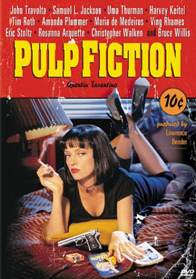

In questa pagina web troverete i film che, secondo me, vanno visti almeno una volta nella vita


Azione
Fantascienza
Blade Runner
In una Los Angeles piovosa e sovrappopolata, il poliziotto Deckard (Harrison Ford), dell'unità Blade Runner, viene richiamato in servizio. Il film ha ottenuto 2 candidature a Premi Oscar ed 1 a Golden Globes.